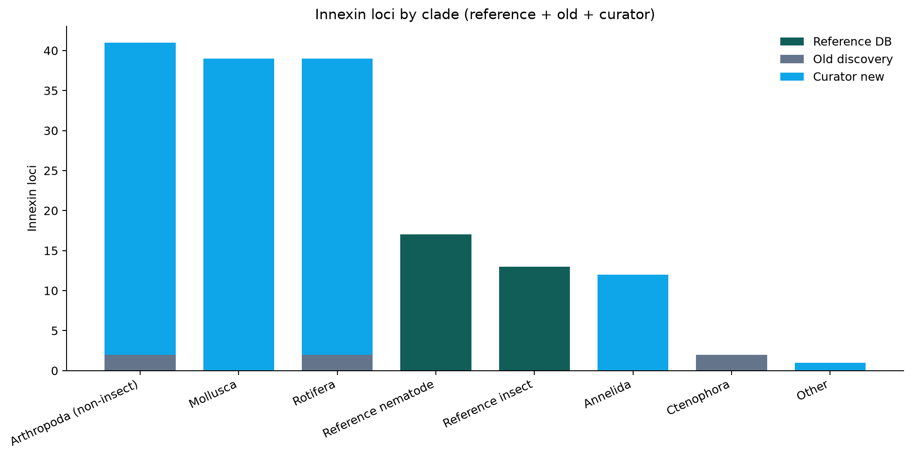
164annotated innexin loci
28species represented
8clade bins
13reference-type labels
Key results
- Dataset integrates 30 reference proteins, 6 old-discovery loci and 128 curator-present loci across 28 species.
- Curator recoveries most often match unc-9 references (38/128 loci) — names like Inx2 in nematodes are best-hit labels, not proven orthologs.
- Outside insects, 74/134 kept loci map (via best-hit) to SF3 (Inx3/Inx7 + nematode-like references), consistent with the tree grouping.
- Among discovery+curator loci, Arthropoda (non-insect) contributes the most (41 loci).
- Median protein length: Rotifera 370 aa vs Mollusca 372 aa.
- Median protein length: Arthropoda (non-insect) 353 aa vs Rotifera 370 aa.
- Median protein length: Reference insect 372 aa vs Reference nematode 423 aa.
- Reference DB covers classical labels: Inx1/ogre, Inx2, Inx3, Inx4/zpg, Inx5, Inx6, Inx7, other nematode, other/unknown, shakB, unc-7, unc-9.
- Note: flat median ~1 exon in Ctenophora / non-insect Arthropoda is often a TSA / ab initio gene model (continuous ORF as one exon), not intron-free innexins.
“Inx2-like” for a mollusc/rotifer means the locus’s best reference hit was an Inx2/unc-9/… protein. Orthology still needs the phylogeny (SF1–SF4), not the gene name alone.
Clade overview
| Clade | Loci | Species | Ref | Old | Curator |
|---|---|---|---|---|---|
| Arthropoda (non-insect) | 41 | 7 | 0 | 2 | 39 |
| Rotifera | 39 | 7 | 0 | 2 | 37 |
| Mollusca | 39 | 4 | 0 | 0 | 39 |
| Reference nematode | 17 | 2 | 17 | 0 | 0 |
| Reference insect | 13 | 4 | 13 | 0 | 0 |
| Annelida | 12 | 1 | 0 | 0 | 12 |
| Ctenophora | 2 | 2 | 0 | 2 | 0 |
| Other | 1 | 1 | 0 | 0 | 1 |
Innexin labels (Inx1–7, shakB, nematode genes)
| Reference type | Subfamily | Loci | Clades |
|---|---|---|---|
| other/unknown | unassigned | 47 | 5 |
| unc-9 | SF3_Inx3_Inx7_nematode | 39 | 5 |
| unc-7 | SF3_Inx3_Inx7_nematode | 34 | 4 |
| shakB | SF1_shakB | 16 | 4 |
| Inx2 | SF4_Inx2_expansion | 14 | 3 |
| Inx1/ogre | SF2_Inx1_ogre | 4 | 2 |
| inx-2 (Cele) | SF3_Inx3_Inx7_nematode | 3 | 1 |
| Inx4/zpg | SF4_Inx2_expansion | 2 | 1 |
| other nematode | SF3_Inx3_Inx7_nematode | 1 | 1 |
| Inx3 | SF3_Inx3_Inx7_nematode | 1 | 1 |
| Inx5 | SF4_Inx2_expansion | 1 | 1 |
| Inx6 | SF4_Inx2_expansion | 1 | 1 |
| Inx7 | SF3_Inx3_Inx7_nematode | 1 | 1 |
Diagrams
Every comparison plot generated from the combined reference + discovery + curator table.
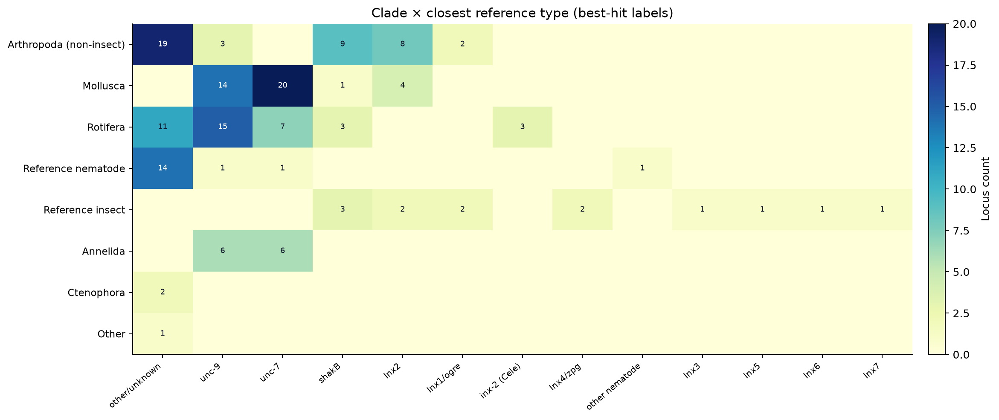
Heatmap: clade × reference type
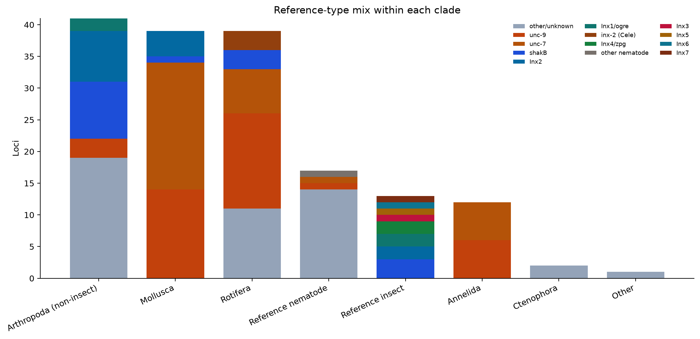
Reference-type mix within clades
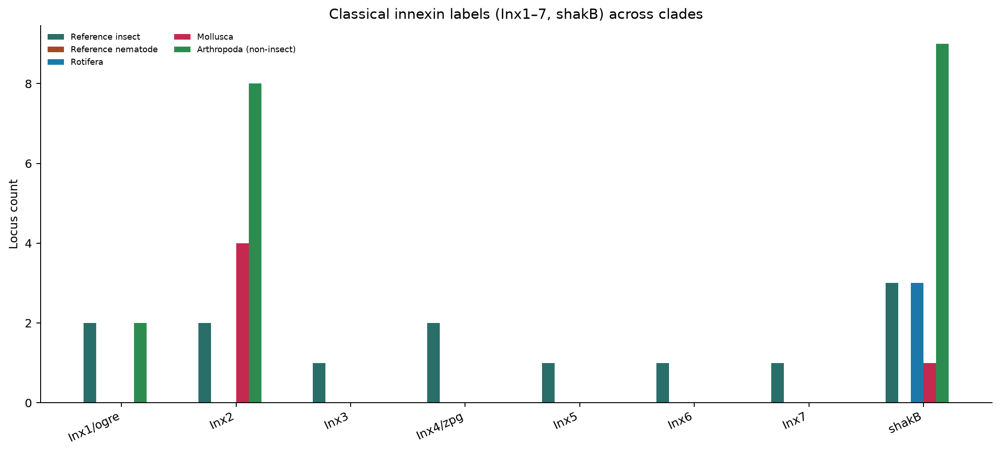
Inx1–7 & shakB across clades
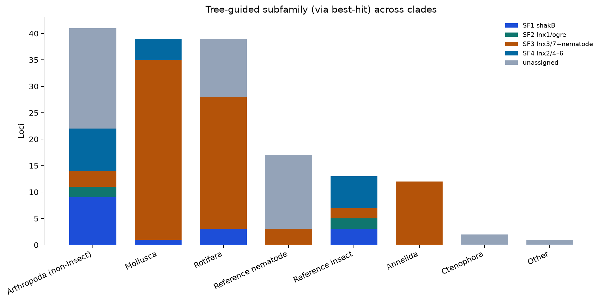
Tree subfamilies SF1–SF4 by clade
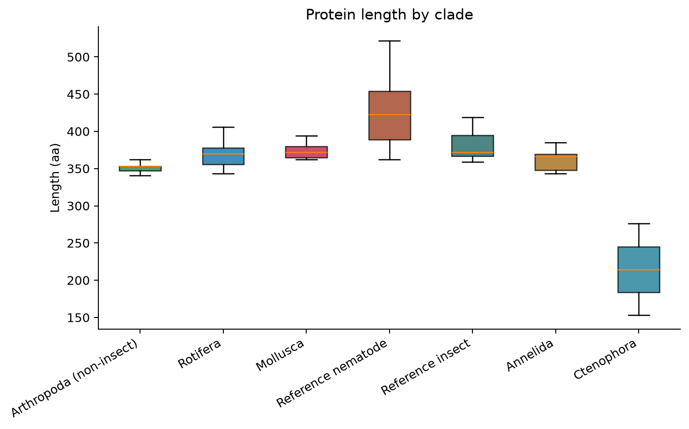
Protein length by clade
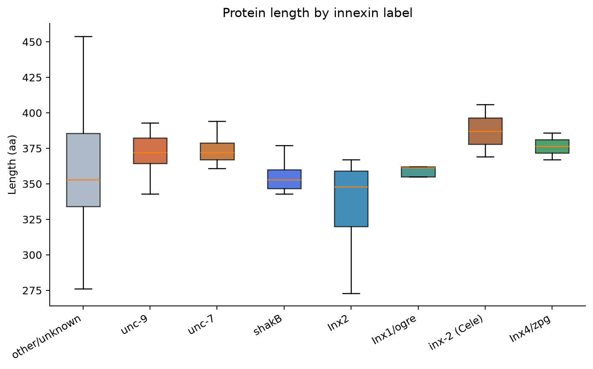
Protein length by innexin label
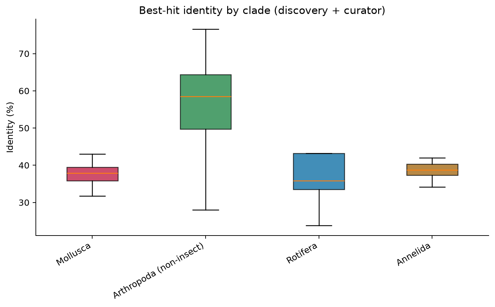
Best-hit identity (%) by clade
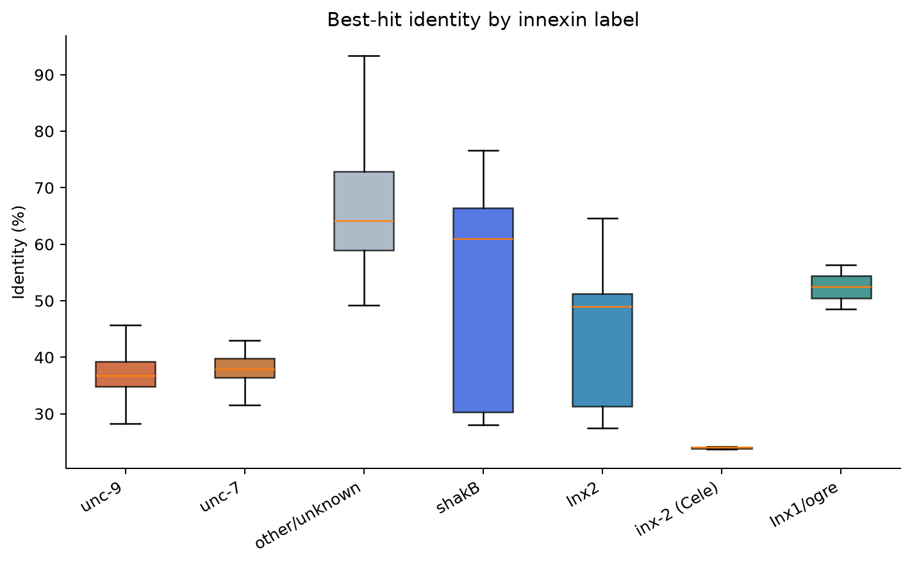
Best-hit identity (%) by innexin label
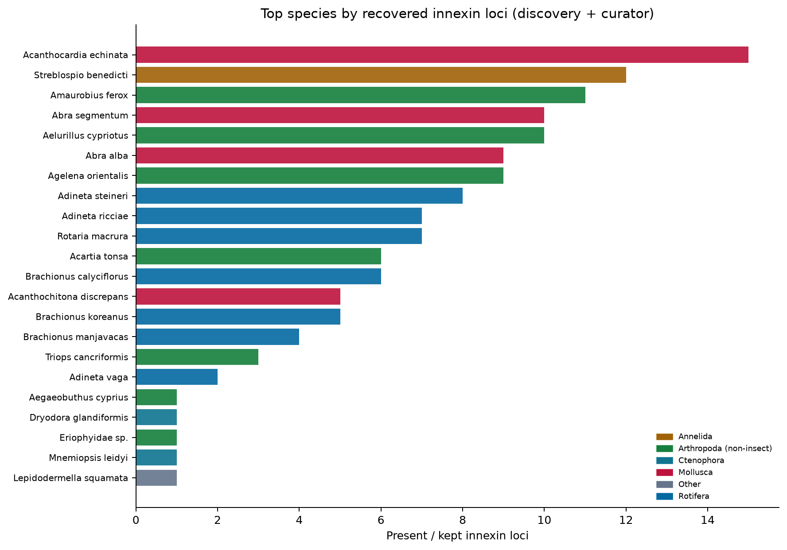
Top species by locus count
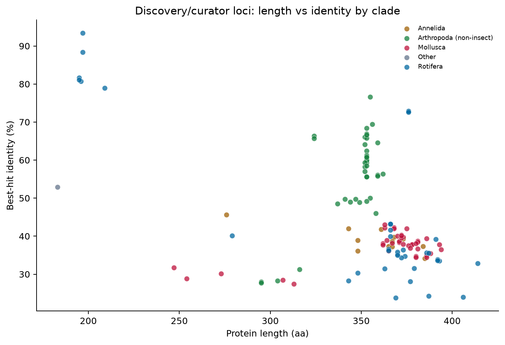
Length vs identity scatter
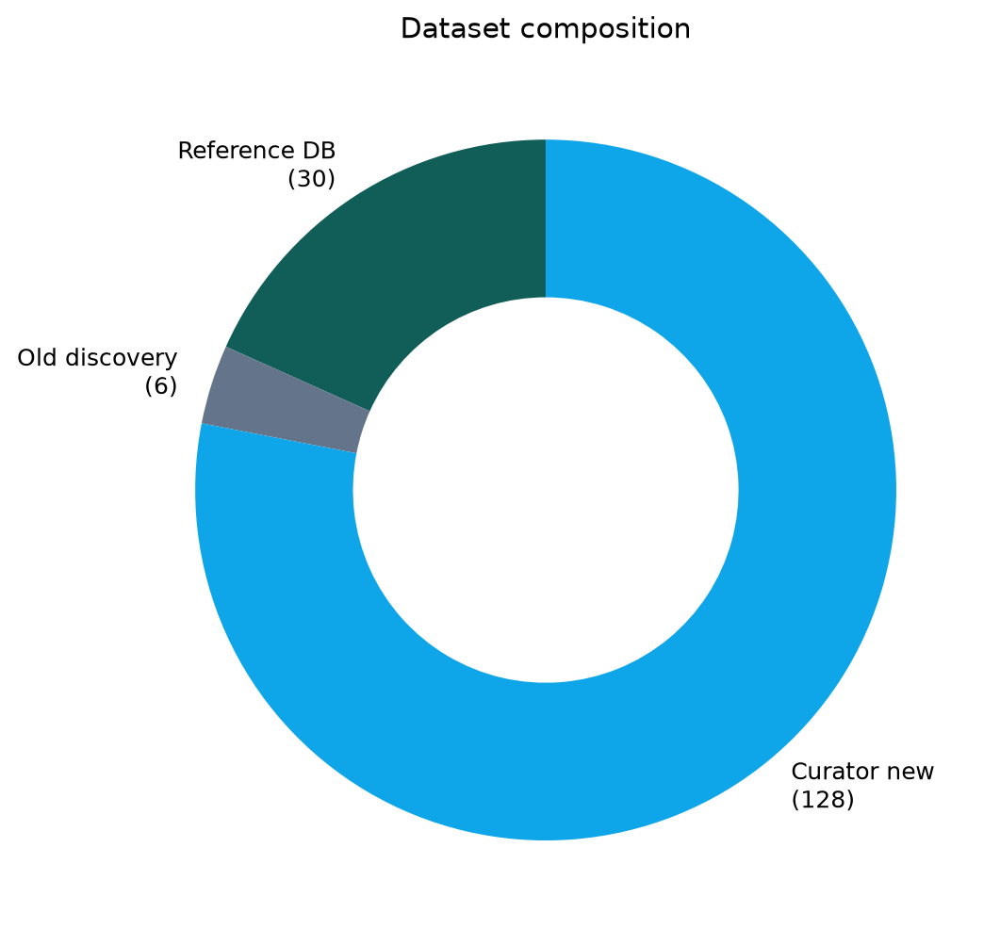
Dataset composition
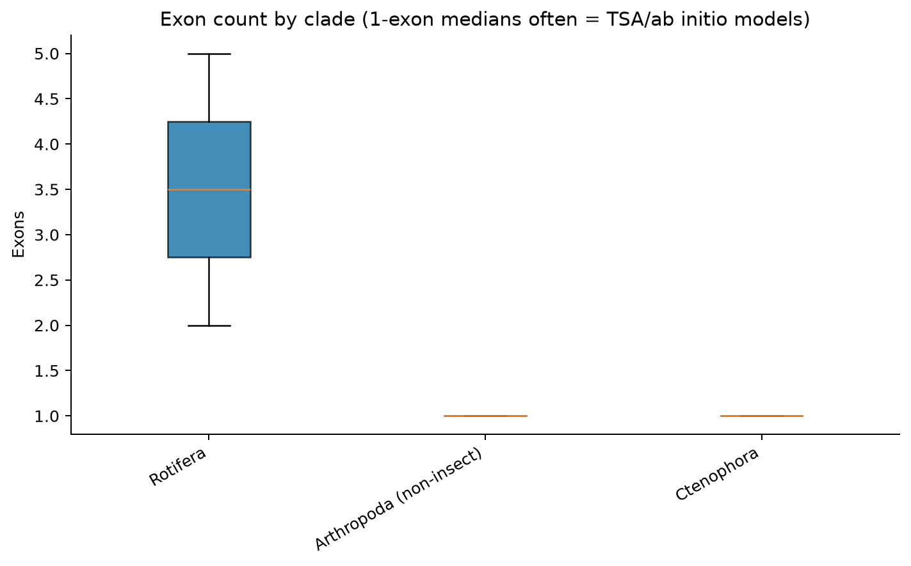
Exon count by clade
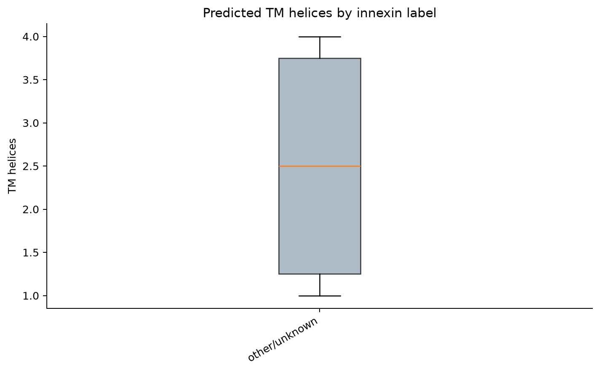
TM helices by innexin label (where annotated)
Data tables
all_innexin_loci_annotated.csv clade_summary.csv reference_type_summary.csv pairwise_clade_comparisons.csv